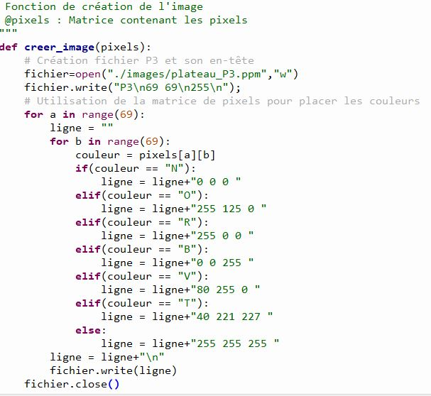
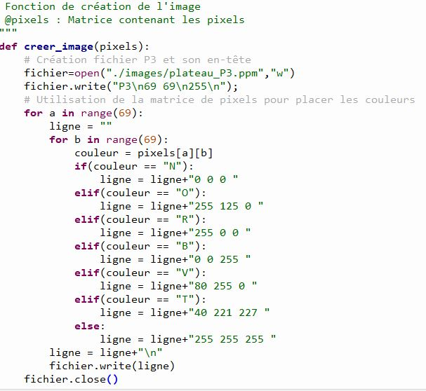

Pour commencer nous avons déterminé combien de pixels il nous fallait pour notre plateau. Pour cela nous avons dessiné le plateau avec comme unité un carré de 5 pixels(donc 5 petits carreaux) pour les cases et 3 pixels (donc 3 petits carreaux) pour les barrières.
Puis nous avons commencé le codage du plateau.
Voici le code pour génerer la matrice du plateau
 
